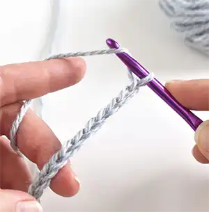
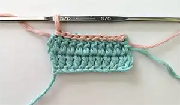
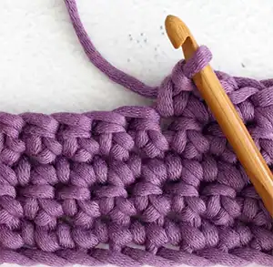
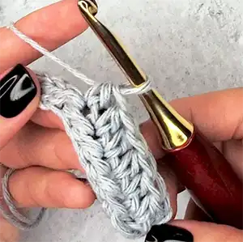
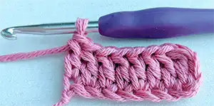
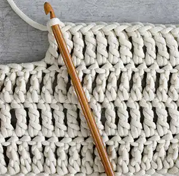
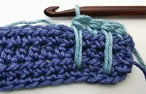

Moo and Yarn Studio
The History of Crochet
Materials
Stitches
Types of Crochet Stitches

Chain Stitch

Slip Stitch

Single Crochet Stitch

Half Double Crochet Stitch

Double Crochet Stitch

Treble Crochet Stitch

Spike Half Double Crochet Stitch
Shell Stitch